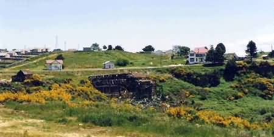
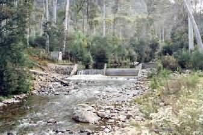
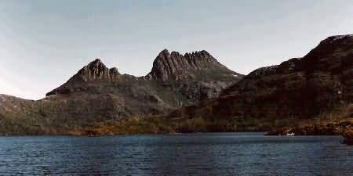
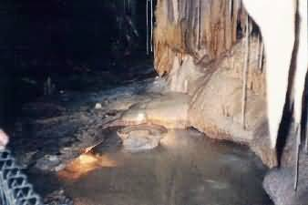
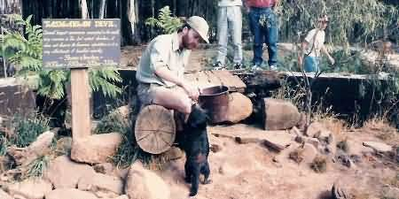
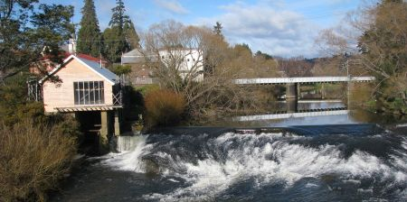
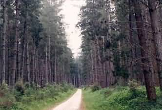

NAVIGATION
TOP of Page
MAIN Page
HOME Page
PREV Page
NEXT Page
NORTHERN REGION
Waratah to Caves
Caves to Deloraine
Deloraine to Launc
TASMANIAN TOUR
North West
Central North
North East
East Coast
South East
South West
Highlands
West Coast
North Coast
|
From Waratah to the Caves Region
Waratah, population 400, is the mining town built beside Mt Bischoff. Artifacts of the
many narrow gauge railway lines centred on this town can still be seen, with the old railway
bridge crossing the lake on the edge of town. The remains of the ore processing plant are to
be found at the bottom of the waterfall. The house of James 'Philosopher' Smith, the
prospector who discovered the Mt Bischoff ore field on 4th December 1871, is found in the
middle of town.

Waratah with remains of the Ore Processing Plant
Mt Bischoff used to be the worlds richest tin mine in the 1880's. It was completely
accessible by road until a few years ago, when I drove the old mine entrance roads to the
large rust and green coloured lake at the top. Head east on Smith St towards Vardy Close
for 400m. Continue onto the B23 Camp Road. Continue to follow the B23 road for 6.7km.
Continue straight onto the A10 Murchison Highway for 240m. Turn left onto the B18 Ridgley
Highway (signs for Hampshire/Burnie) for 3.3km. Turn right onto Guildford Road for 5.3km
into Guildford Junction.
TOP
MAIN
HOME
PREV
NEXT
Guilford Junction, (population several ghosts?) was the site of the township of
Guilford. Remains of the old town, with its street layout and narrow gauge railway formations,
can still be found. The most evident relic is the platform for the Emu Bay Railway line.
Head Northwest on Guildford Road towards Goderich Road for 5.3km. Turn left onto the B18
Ridgley Highway for 3.3km. Continue straight onto the A10 Murchison Highway for 16.6km. Turn
left onto the C132 Belvoir Road. Continue to follow Belvoir Road for 26.0km. Turn right onto
the C132 Cradle Mountain Road for 2.9km. Turn right at 22m into the Cradle Mountain Wilderness
Village.

A Weir on the road going into Cradle Mountain
Cradle Mountain is a spectacular spire rising from the countryside. It surrounds
Dove Lake, and is an excellent photographic and hiking opportunity. Take notice of the
warning signs for hikers. Local accommodation and meals are expensive. Have a look at the
Waldheim Chalet and the Trailside Museum. Cradle Mountain Devil Park, before the
entrance to the park proper is a 'must visit'. It is a sanctuary for the endangered Tasmanian
Devils. After having close contact with a Devil here during my last trip to Tasmania, I have
completely changed my opinion of the animal. They are intelligent, inquisitive, playful and
have the softest fur I have ever touched. Let us hope there is a solution to the facial tumour
epidemic that is decimating wild devil numbers across the state.

Cradle Mountain and Dove Lake
Head north-east on the C132 Cradle Mountain Road for 2.9km. Turn right to stay on the C132
Cradle Mountain Road for 20.9km. Turn right onto the C136 Cethana Road. Continue to follow
the C136 road for 11.0km. Turn right onto Olivers Road for 21.0km. Turn left onto Mersey
Forest Road for 6.3km. Turn sharp left onto the B12 Liena Road for 1.2km into the King
Solomons Cave entrance kiosk.
TOP
MAIN
HOME
PREV
NEXT
From the Caves Region to Deloraine
King Solomon Cave is the smaller of the two local cave systems and so has a quicker
tour. Whilst worthwhile visiting for its small caverns and water sculptures, I prefer the
Marakoopa Cave. Head east on the B12 Liena Road towards Mersey Forest Road for 7.1km. Turn
right onto Mayberry Road for 3.8km into the Marakoopa Cave entrance kiosk. Marakoopa Cave
features an underground river of sparkling clear water and spectacular floodlit chasms. This is
one of the best features of a Tasmanian trip. Head Northeast on Mayberry Road for 3.8km. Turn
slight right to stay on Mayberry Road for 76m. Continue onto the B12 Mole Creek Main Road for
8.8km into Mole Creek.

Marakoopa Cave Pool limestone formations
Mole Creek, a small farming hamlet, has a pub in the centre, and a petrol station at
the eastern end of town. It is the terminus of the disused Mole Creek Branch Line. The Model
Railway on the Tourist Information Board has moved to Penguin. Head east on the B12 Mole
Creek Main Road towards Hall Street for 4.9 km to enter Trowunna Wildlife Park.
TOP
MAIN
HOME
PREV
NEXT
Trowunna Wildlife Park has fauna from all over Tasmania. This place is one of the
highlights of a trip to Tasmania - a 'must see'. If you want to see small marsupials in their
natural habitat, go through the nocturnal house. Animals wandering around include Cape
Barren geese, emus and wallabies. In enclosures are koalas, wombats and the amazing
Tasmanian Devils.

Hand Feeding a Tasmanian Devil at Trowunna Wildlife Park
Head Northeast on the B12 Mole Creek Main Road towards Mersey Hill Road for 2.4km. Turn left
onto the B12 Sorell Street for 15.1km. At the roundabout, take the third exit onto Emu Bay
Road. Go through 3 roundabouts for 1.9km to enter Deloraine. Deloraine, population 1900,
is found on the Meander river, at the base of the Great Western Tiers. The
historic buildings in town include the Deloraine Hotel (1848) and St Marks Church (1860). The
tall tree nearby is a Californian Redwood. The Turf Club (1853) is the only steeplechase course
in Australia, and has brushwood fences. Worthwhile accommodation can be had at the Great Western
Motel at the top of the hill. For a good mixed grill and milkshake, go to the Amble Inn at the
bottom of the hill near the railway crossing.
TOP
MAIN
HOME
PREV
NEXT
From Deloraine to Launceston

Meander River Rapids at Deloraine
Head east on the A5 East Parade towards East Westbury Place. Continue to follow the A5. Go
through one roundabout for 3.4kM. Merge onto the Bass Highway/National Highway 1 via the
ramp to Launceston for 42.9 km. Keep left at the fork and follow the signs for National
Highway 1/Launceston/TAMAR VALLEY and merge onto the Midland Highway/National Highway 1.
Continue to follow National Highway 1 for 3.6 km. Turn right onto Elizabeth Street for 450m.
Turn left onto St John Steet for 300m. Turn right onto Brisbane Street for 47m into Launceston.
Westbury, population 1,000, was originally set out in 1828 as the gateway to the North
West, with plans for 200km of roads. This never eventuated, and the township that grew up
around the English style village green is filled with Georgian style buildings. Of note are
White House (1842), St Andrews Church with its ornate woodscreen plus The Holy Trinity Church
of Rome, which contains a memorial clock tower and is one of the largest country churches in
Tasmania.
TOP
MAIN
HOME
PREV
NEXT
Hagley contains St Marys Church (1861), the burial place of Sir Richard Dry who was the
states first native born Premier and knight. The east window has a depiction of the crucifixion
by the 13th century Italian painter Guido de Siena Carrick, on the Liffey river, contains
a bluestone flour mill. The Plough Inn (1841) is now The Gallery. Hadspen, population 900,
on the Esk river, is entered on a bypass of the Bass highway. Red Feather Inn and the Old Gaol
are both from the 1840's. Not far across the South Esk is Entally House (1820), one of Tasmania's
premier historic houses set in English parkland. It and the bluestone Church of the Good Shepherd
were built by Thomas Reibey, whose rich businesswoman mother started as a transportee to Sydney
at the age of thirteen.

Pine Plantation near Launceston
Launceston, population 65,000, on the Tamar river, is Tasmania's second city. The easiest
parking is on Tamar Street, about two blocks Norheast of the CBD. Visit the Art Gallery & Museum.
It has a Chinese Joss House from the east coast goldrush days at Moorina, offices are housed in
original and well maintained buildings (unlike Sydney). For interesting shopping try the multi
story Birchalls department store in the Brisbane Street Mall and find an exotic variety of books
at Fullers Book Shop in the curved Quadrant Mall.
Cataract Gorge has walkways on both sides going to the First Basin Park. There is a six
minute ride across the basin on the worlds longest single span chairlift (308m), landing in the
picnic grounds amongst strolling peacocks. Penny Royal Mill, at the entrance to Cataract
Gorge, has a tourist recreation of a gunpowder mill and a pirate boat boarding in the enclosed
lake. Head Northeast on Brisbane Street towards the Quadrant Mall for 120 m. Turn right onto the
A3 George Street for 170m. Take the first right on to the A3 York Street for 1.0km. Keep left at
the fork and go through two roundabouts for 40.3km into Beaconsfield.
TOP
MAIN
HOME
PREV
NEXT
|